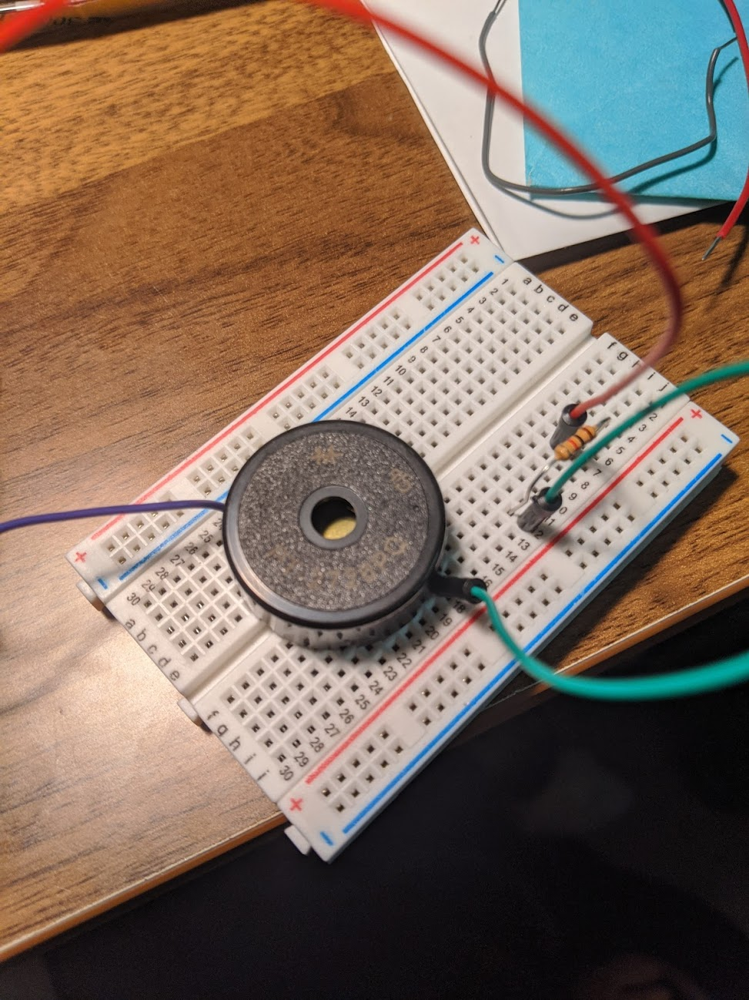
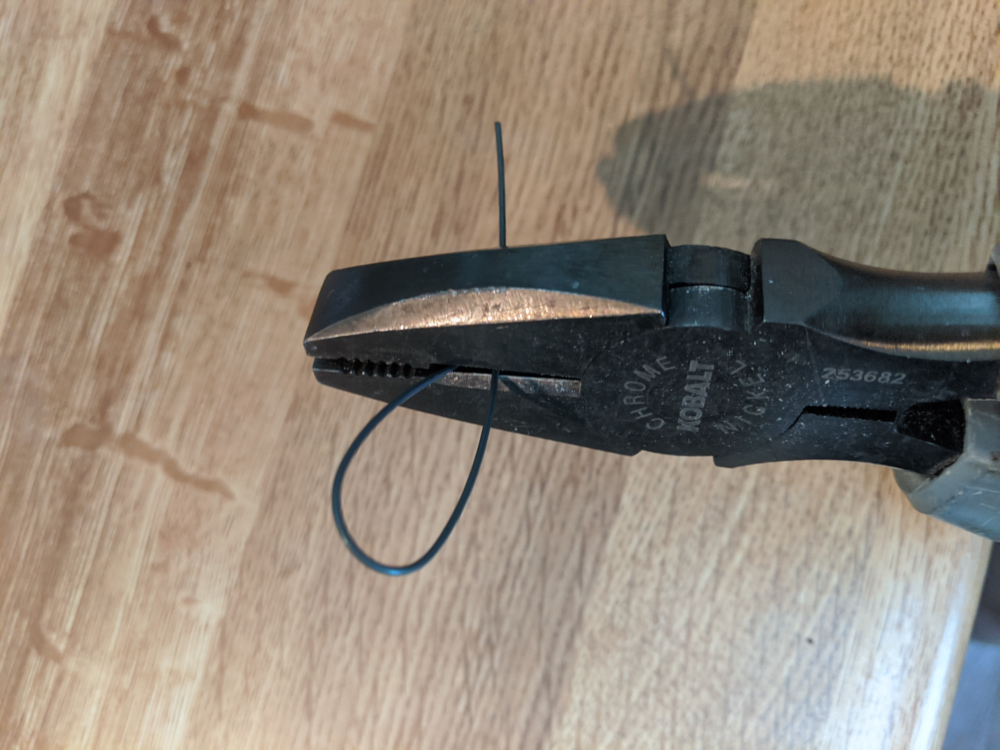
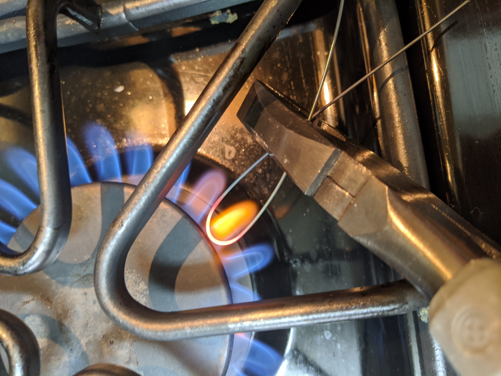
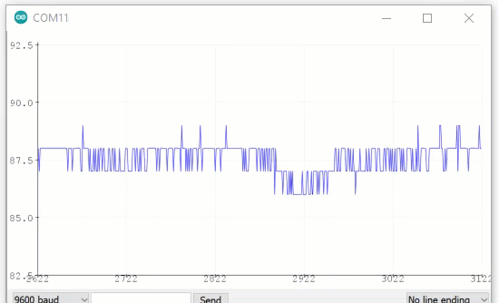

In class this week we played with a piezo disc/buzzer, LED strips, and just dipped our toes into stepper motors. I was particularly excited about stepper motors for my final project, but I hooked up a potentiometer incorrectly to an external power source and fried my board!
Before this fiasco, I was able to use the buzzer to first make noise, then play a scale, and finally sync to an LED strip. Later on, I was excited about the possibilities of the piezo and uploaded code from Github for the Tetris theme song. Perhaps in the future I may create a Tetris game on an LED array?
Piezo Scale + Star Wars
 The code for Star Wars is here
LED Strip Programming
Here's what I did in class. Birds aren't real, enough said.
Assignment: Choose an output device and operate it!
Nitinol
First, I was overly ambitious and tried to use nitinol, also known as muscle wire as a potential programmable output. Unfortunately, I think the wire gauge was too thick to be reasonably pliable. I did get to set a conformation by heating up the metal to red hot (which is apparently 900F) and setting it by plunging it in cold water. From there, you can bend it and the form is reset with an applied voltage. Here's a few images from this journey.




Assignment: Choose a Novel Output Device!
Advanced Application of the Stepper Motor
I decided to use a stronger stepper motor than I had used previously, which on first sight seemed more complicated internally. Specifically, I was using the Nema 17 Bipolar Stepper Motor to be smooth moving and alternating directions based on a signal for my final project. I tried to incorporate the Galvanic Skin Conductance sensor from seeed, but it needs a lot of work!
